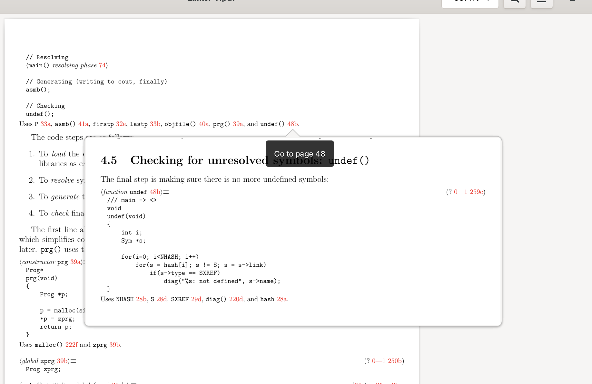

Plan 9 from Bell Labs is an operating system designed in the late 1980s as the successor to Unix, by the same people who created Unix: Ken Thompson, Rob Pike, Dennis Ritchie, and others at Bell Labs. It takes Unix ideas — everything is a file, small composable tools, plain text — and pushes them further and more consistently. For example, in Plan 9 the network stack, the windowing system, and even processes are accessed as files.
Plan 9 is a complete operating system: it has a kernel, a shell, a compiler, a windowing system, a text editor, networking, and graphical applications. The entire system is about 183K lines of code — small enough to understand in its entirety.
Linux is enormous. The kernel alone is over 40 million lines of code. GCC is 15 million. Glibc is 1.5 million. Xorg is 500K. Each individual component contains more code than all of Plan 9 combined.
It is simply not possible to explain the full Linux stack in a book series. You could write a book about the Linux kernel (and people have), but you would never finish a series covering the kernel and the compiler and the shell and the windowing system and the graphics stack and the networking stack — each explained line by line.
Plan 9 makes this possible because the code is small, clean, and consistent. And the concepts transfer directly to Linux and other systems (see "Learn Here, Apply Everywhere").
No. You do not need to switch to Plan 9 or even install it (though it is fun to try — see Getting Started). The point is to understand how an operating system works by reading one that is small enough to read in full. The knowledge transfers to whatever system you actually use.
Many Plan 9 ideas are already in the systems you use daily:
UTF-8 was invented for Plan 9,
/proc comes from Plan 9,
Linux namespaces (Docker, containers) come from Plan 9,
and Go's goroutines were inspired by Plan 9's libthread.
The books are not introductions to programming or computer science. They assume you already have a rough idea of how a kernel works, how a compiler works, etc. You should be comfortable with the C programming language and familiar with Unix-like systems (the command line, files, processes).
The books cover the practice — the actual source code — not the theory. If you want the theory first, CS:APP is an excellent companion.
The PDFs are linked from the books table on the main page. They are hosted at github.com/aryx/assets. The books are free to read.
Literate programming is a technique invented by Donald Knuth in 1984 where code and documentation live in a single source file, and the code is organized in the order a human would want to read it rather than the order the compiler demands. Tools extract either a typeset book or compilable source code from the same file.
See Literate Programming for a fuller explanation with diagrams.
Books have been used for teaching for about 2000 years. They survived radio, television, the internet, and MOOCs. There is a reason: a book provides a narrative — a carefully chosen order that builds understanding piece by piece.
The alternatives each fall short in their own way:
The Principia books aim to combine the best of both worlds: the narrative of a book with the navigation of an IDE. Thanks to syncweb, the literate programs produce PDFs with cross-references, indexes, and hyperlinks — bringing IDE features into the book. Here is a screenshot of the Linker book open in Evince, showing clickable cross-references between sections:

The biggest contribution is writing explanations.
Most books have a LOE/LOC ratio well below 1.0, meaning there is
far more code than explanation.
If you understand a piece of the code and can explain it clearly,
contributions to the .nw literate program files are
very welcome.
The source is at github.com/aryx/principia-softwarica. Feel free to open issues or pull requests.